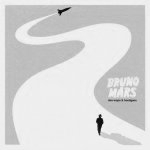
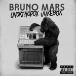
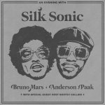

Bruno Mars
Here's All Bruno Mars Album:
-  Doo-Wops & Holigans (2010)
- Unorthodox Jukebox (2012)
- 24K Magic (2016)
- An Evening With Sonic (2021)
Bruno Mars Awards:
American singer and songwriter Bruno Mars has received various awards and nominations throughout his career. He signed a record deal with Atlantic Records in 2009, and came to prominence as a composer for other artists along with his production team the Smeezingtons. They were responsible for Mars's first collaboration with B.o.B, the single "Nothin' on You", which won Song of the Year at the 2010 Soul Train Music Awards, while at the 53rd Annual Grammy Awards it was nominated in three categories, including Record of the Year. Mars's debut solo single, "Just the Way You Are", won Best Male Pop Vocal Performance at the same ceremony. His debut studio album, Doo-Wops & Hooligans (2010) was nominated for Album of the Year at the 54th Annual Grammy Awards, while "Grenade" was nominated for Record of the Year and Song of the Year. He won awards for Best Male Artist at several award ceremonies in 2011 and 2012, including American Music Award for Favorite Pop/Rock Male Artist, Brit Award for International Male Solo Artist and the Echo Award for Best International Male.
Mars's second studio album, Unorthodox Jukebox (2012) earned the singer four nominations at the 56th Annual Grammy Awards, with two of its singles, "Locked Out of Heaven", and "When I Was Your Man", being nominated for Record of the Year and Best Pop Solo Performance, respectively. The album won Best Pop Vocal Album at the ceremony and was also recognized with a Juno Award. In addition, Mars won two consecutive International Artist of the Year at the 2013 and 2014 NRJ Music Awards. In 2014, he won an International Male Solo Artist at the 2014 BRIT Awards and collaborated on Mark Ronson's single "Uptown Funk". The song won the Brit Award for Single of the Year, Song of the Year at the Soul Train Music Awards, International Work of the Year at the APRA Music Awards and two Grammy awards - Record of the Year and Best Pop Duo/Group Performance.
In 2016, Mars received a Hollywood Walk of Fame star in the category of recording and became the recipient for NRJ Artist of Honor. In 2017, he earned an Innovator Award at the iHeartRadio Music Awards and for his work on Adele's third studio album, 25 (2015), he received a Grammy Award for Album of the Year at the 59th ceremony. Mars third studio album, 24K Magic (2016), earned him seven awards at the 2017 American Music Awards, including Artist of the Year, two for his single "That's What I Like" and other two for his album 24K Magic. He also won Album/Mixtape of the Year at the 2017 Soul Train Music Awards, in addition to winning four other awards. In 2018, the album won Grammy Awards for Album of the Year and Best R&B Album, the single "24K Magic" received Record of the Year, while "That's What I Like" earned Song of the Year, Best R&B Performance and Best R&B Song. In 2021, Mars released a collaborative album with Anderson .Paak, as Silk Sonic, titled An Evening with Silk Sonic. Its single, "Leave the Door Open" won Song of the Year at the 2021 Soul Train Music Awards, while the duo won Best Group at the BET Awards 2021, International Group of the Year at the 2022 Brit Awards and Best Duo/Group of the Year at the 2022 iHeartRadio Music Awards.